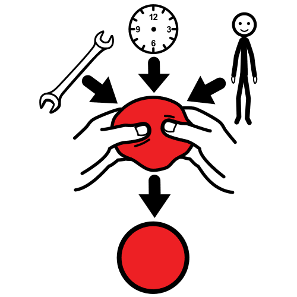

Enfermedad derivada de la no tolerancia de sustancias del ambiente y/o alimentos.
Ejemplo:
Carola tenía alergia al pelo de los gatos.
Beneficiaria
Definición:
Hacer bien a alguien o a algo.
Ejemplo:
Estudiar para el examen le beneficiaría en sus notas.
Diseñar
Definición:
Hacer un plan detallado para llevar a cabo una acción o idea.
Ejemplo:
Debes diseñar cómo será la excursión a Granada.
Logística

Definición:
Medios necesarios para realizar un servicio.
Ejemplo:
Juan es el encargado de dirigir la logística de su empresa.
Patrullas
Definición:
Grupo de personas que realiza un trabajo.
Ejemplo:
Los vecinos se organizaron en patrullas para vigilar las casas.
Supervisará
Definición:
Revisar el trabajo realizado por otros.
Ejemplo:
El profesor supervisará el trabajo de Lengua.
Velará
Definición:
Hacer cumplir algo.
Ejemplo:
Los enfermeros velaban por la salud del paciente.
¡Enhorabuena! ya conoces lo necesario acerca de los números decimales como para poder diseñar un menú que cumpla las cantidades recomendadas.
También estás sobradamente preparado para poder realizar la compra semanal de los alimentos necesarios.
Por tanto, es el momento de que saques tu lado más solidario. ¡Una persona necesita tu ayuda!
Diseña junto con tus compañeros un menú adecuado a sus necesidades, prepara la lista de la compra y realiza la compra.
Definición:
Hacer un plan detallado para llevar a cabo una acción o idea.
Ejemplo:
Debes diseñar cómo será la excursión a Granada.
Lectura facilitada
Ya sabes utilizar los números decimales para poder hacer un menú saludable.
Ahora, junto a tus compañeros debes elaborar un menú para una persona concreta.
Para ello deberás:
Conocer las necesidades concretas de la persona. Saber si presenta alguna enfermedad o alergia.
Realizar la lista de la compra de los alimentos que has seleccionado.
Hacer la compra.
Apoyo visual
1. Las patrullas solidarias
Pasos para realizar la compra solidaria
{"id":"08796dca-a5b2-44af-84f0-8df4fcde8c4b","title":"Patrulla solidaria","mindmap":{"root":{"id":"b53a17b8-ac8d-4965-88e3-cf1be7fd0a56","parentId":null,"text":{"caption":"Patrulla solidaria","font":{"style":"normal","weight":"bold","decoration":"none","size":20,"color":"#000000"}},"offset":{"x":0,"y":0},"foldChildren":false,"branchColor":"#000000","children":[{"id":"0506495a-7f37-44a9-9c03-bfab98f7cf2a","parentId":"b53a17b8-ac8d-4965-88e3-cf1be7fd0a56","text":{"caption":"2.Diseñar el menú","font":{"style":"normal","weight":"normal","decoration":"none","size":15,"color":"#000000"}},"offset":{"x":-210.1875,"y":-257.125},"foldChildren":false,"branchColor":"#505041","children":[]},{"id":"f0449a1c-9bf1-490a-861e-ba63d5d51aeb","parentId":"b53a17b8-ac8d-4965-88e3-cf1be7fd0a56","text":{"caption":"3.Preparar la lista de la compra","font":{"style":"normal","weight":"normal","decoration":"none","size":15,"color":"#000000"}},"offset":{"x":87.83333333333333,"y":-256.125},"foldChildren":false,"branchColor":"#3dbecb","children":[]},{"id":"0b884af0-991f-4660-ba96-3793a61d8936","parentId":"b53a17b8-ac8d-4965-88e3-cf1be7fd0a56","text":{"caption":"4.Elaborar un presupuesto","font":{"style":"normal","weight":"normal","decoration":"none","size":15,"color":"#000000"}},"offset":{"x":210.22916666666666,"y":-31.0625},"foldChildren":false,"branchColor":"#5e9524","children":[]},{"id":"60a21bcb-dd83-4cdc-b6a3-908b0f25b3a0","parentId":"b53a17b8-ac8d-4965-88e3-cf1be7fd0a56","text":{"caption":"5.Realizar la compra","font":{"style":"normal","weight":"normal","decoration":"none","size":15,"color":"#000000"}},"offset":{"x":59.4666748046875,"y":231.17777506510416},"foldChildren":false,"branchColor":"#b75657","children":[]},{"id":"0397382d-9a37-47f6-affc-a52e925b4c66","parentId":"b53a17b8-ac8d-4965-88e3-cf1be7fd0a56","text":{"caption":"6. Recompensa","font":{"style":"normal","weight":"normal","decoration":"none","size":15,"color":"#000000"}},"offset":{"x":-339.8125,"y":159.35416666666666},"foldChildren":false,"branchColor":"#7a3e6b","children":[]},{"id":"ec03eba6-ae34-47bd-a571-35d8eb408e26","parentId":"b53a17b8-ac8d-4965-88e3-cf1be7fd0a56","text":{"caption":"1. Persona a ayudar. Características","font":{"style":"normal","weight":"normal","decoration":"none","size":15,"color":"#000000"}},"offset":{"x":-377.7708333333333,"y":-91.125},"foldChildren":false,"branchColor":"#65cd2b","children":[]}]}},"dates":{"created":1640017807446,"modified":1642695085426},"dimensions":{"x":4000,"y":2000},"autosave":false}
A continuación vais a encontrar una serie de pasos que os ayudarán en la planificación de vuestro proyecto solidario.
Las patrullas solidarias
Para trabajar nos vamos a organizar en grupos de 2 o 4 personas.
La persona beneficiaria
Se os va a dar una tarjeta con los datos de la persona a la que tenéis que ayudar.
Es hora de que diseñéis una dieta semanal a medida de la persona que vais a ayudar. Debe ser un menú saludable, por lo que deberéis tener en cuenta la pirámide alimenticia, y cumplir con las necesidades nutricionales que esta persona tenga.
Deberéis rellenar una ficha como la siguiente para cada día de lunes a viernes (podéis descargarla y rellenarla directamente o imprimirla y hacerlo a mano), en ella anotaréis qué alimentos y en que cantidad se consumirán en cada comida, calculando posteriormente las cantidades de los diferentes nutrientes de cada comida, así como los totales.
No te olvides de rellenarla y acuérdate de guardarla cuando acabes.
Accede a la ficha en pdf de las tarjetas de alimentos.
Debéis verificar que el menú diario es saludable y cumple con el aporte energético diario, los niveles de referencia recomendados y los requisitos nutricionales de su edad y posible patología.
La lista del compra
¡Enhorabuena!, si habéis llegado hasta aquí ya tenéis diseñado el menú. Entonces, es el momento, de comenzar a planificar la compra.
Deberéis calcular las cantidades totales de cada alimento necesarias para esa semana. Y posteriormente, habrá que definir las cantidades a comprar, teniendo en cuenta que, por ejemplo:
Si necesita un litro y medio de leche, deberemos incluir en la lista de la compra dos litros puesto que viene en envases de 1 litro.
Si necesita tres yogures, deberíamos adquirir un paquete de cuatro, puesto que en este formato es en el que lo encontraremos en el supermercado.
Para realizar esta actividad, debéis cumplimentar las tres primeras columnas siguiente ficha (podéis descargarla y rellenarla directamente o imprimirla y hacerlo a mano):
Para la consulta de los precios e información nutricional, puedes descargar la ficha que te ofrecemos.
Accede a la ficha en pdf de las tarjetas de alimentos.
El presupuesto
Llega el momento de realizar la compra y establecer el presupuesto necesario. Para ello, deberéis consultar los precios de los mismos y calcular el presupuesto necesario para hacer la compra de la semana.
Definición:
Grupo de personas que realiza un trabajo.
Ejemplo:
Los vecinos se organizaron en patrullas para vigilar las casas.
Definición:
Hacer cumplir algo.
Ejemplo:
Los enfermeros velaban por la salud del paciente.
Definición:
Revisar el trabajo realizado por otros.
Ejemplo:
El profesor supervisará el trabajo de Lengua.
Definición:
Enfermedad derivada de la no tolerancia de sustancias del ambiente y/o alimentos.
Ejemplo:
Carola tenía alergia al pelo de los gatos.
Definición:
Hacer bien a alguien o a algo.
Ejemplo:
Estudiar para el examen le beneficiaría en sus notas.
Definición:
Medios necesarios para realizar un servicio.
Ejemplo:
Juan es el encargado de dirigir la logística de su empresa.


.png){kind=link}